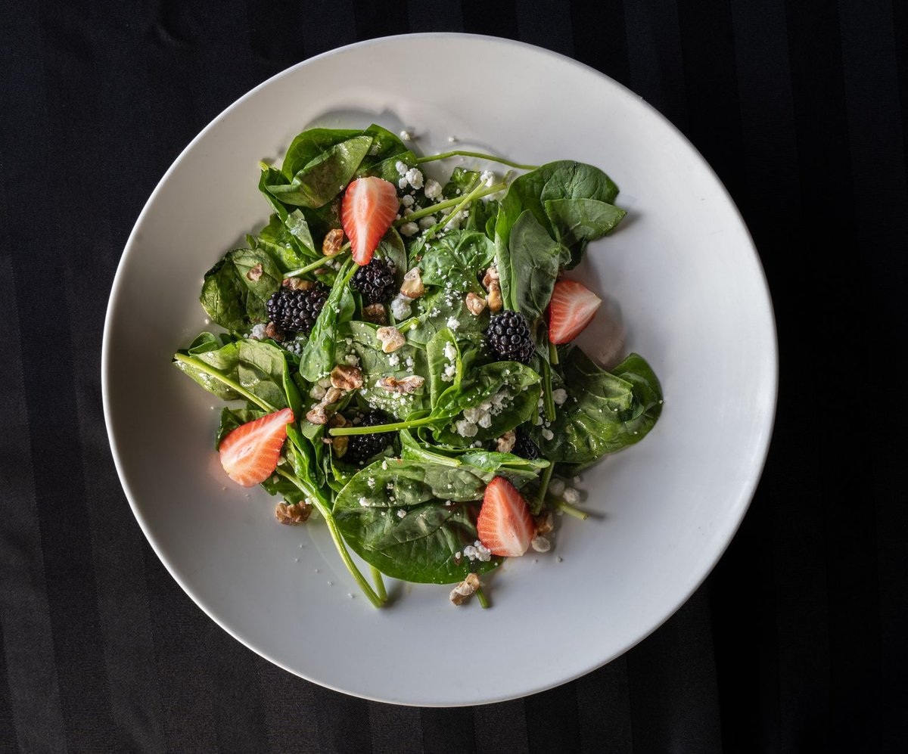

Vitamin D Drug May Help Crack Pancreatic Cancer’S Protective Shield
Key takeaways
- When my close family friend was diagnosed with pancreatic cancer, I felt completely helpless watching them face a wall of dense tissue that standard treatments simply couldn't penetrate.
- That heartbreaking experience sparked my obsession with oncology research
- Track what feels sustainable and adjust gradually.
When my close family friend was diagnosed with pancreatic cancer, I felt completely helpless watching them face a wall of dense tissue that standard treatments simply couldn't penetrate. That heartbreaking experience sparked my obsession with oncology research and brought me to a groundbreaking discovery: a Vitamin D Drug May Help Crack Pancreatic Cancer’S Protective Shield by reprogramming the stroma surrounding tumors.
For years, pancreatic ductal adenocarcinoma has been notoriously difficult to treat because it builds a thick fibrous shell around itself. This dense matrix acts like armor, blunting chemo and blocking immune cells from getting close. But specialized synthetic vitamin D analogs are changing the game by opening up those tightly packed defenses.
Research pioneered at the Salk Institute revealed that stellate cells in pancreatic tumors express high levels of vitamin D receptors. When activated by a modified Vitamin D Drug May Help Crack Pancreatic Cancer’S Protective Shield, these cells switch from aggressive defense builders back into a quiescent, peaceful state. You can check out a related healthy tip on cellular repair to learn how micronutrients interact with targeted therapies.
By softening this fibrous microenvironment, doctors can enhance drug delivery dramatically. It allows standard chemotherapy agents like gemcitabine to reach deep into the core of the tumor where they could never go before. If you want to dive deeper into proactive wellness strategies, read our another practical guide on reducing chronic systemic inflammation.
The 2-Minute Win
Get your serum 25-hydroxy vitamin D levels checked during your next routine lab work. Knowing your baseline helps you and your physician optimize immune resilience effectively.
Scientists are combining these specialized analogs with modern checkpoint inhibitor immunotherapies. Once the physical wall softens, your body's T-cells finally have a fighting chance to recognize and attack the malignant cells. Discover a similar wellness insight about supporting your body's immune pathways naturally.
While lab studies continue to progress into clinical human trials, staying ahead of early metabolic markers remains essential. Consistent daily monitoring and open communication with your oncologist are crucial steps to take. Be sure to stay consistent with this approach to stay fully informed on integrative breakthroughs.
"Understanding how a Vitamin D Drug May Help Crack Pancreatic Cancer’S Protective Shield shifts our perspective from simply attacking tumors to intelligently remodeling their surrounding environment."
Living through a health crisis with loved ones taught me that knowledge truly is power. Keeping up with metabolic research gives us hope and actionable questions to ask our medical teams. Feel free to explore more longevity guides as we track the latest in science-backed treatments together.
Educational only — not medical advice.
Recommended Reading
- The Vitamin D Link: Could This Nutrient Be Your Cancer Shield?
- Habits for Longevity: A Science-Backed Approach
- Biohacking Your Sleep: Science-Backed Strategies for Deeper Rest
More in longevity
Scientists Reveal What Seven Days Of Fasting Does To The Human Body
Scientists reveal what seven days of fasting does to the human body, from deep cellular autophagy to metabolism shifts.
Read article →
longevityWhat Nobody Tells You About How This Diet May Slow Brain Aging By 2.5 Years
Discover how the MIND diet and gut health connect. Learn why This Diet May Slow Brain Aging By 2.5 Years with actionable
Read article →Related posts
Scientists Reveal What Seven Days Of Fasting Does To The Human Body
Scientists reveal what seven days of fasting does to the human body, from deep cellular autophagy to metabolism shifts.
Read article →What Nobody Tells You About How This Diet May Slow Brain Aging By 2.5 Years
Discover how the MIND diet and gut health connect. Learn why This Diet May Slow Brain Aging By 2.5 Years with actionable
Read article → longevity
longevityHow I Finally Made Pomegranate Compound Improves Heart Function By Up To 80% In Study Work For Me
Learn how a pomegranate compound improves heart function by up to 80% in study findings, plus practical daily tips for c
Read article →